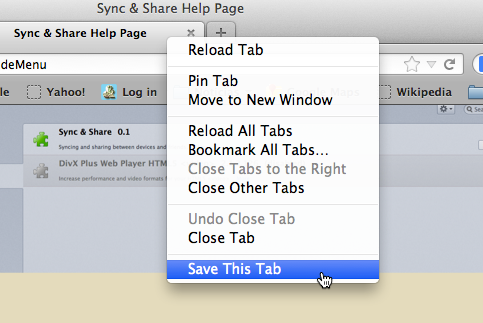

1.Settings:
-
1.1.How to go to preferences panel?
-
There are two ways to go to the preference panel:
From Sync & Share Menu
- Go to Tools.
- Click Sync & Share Menu.
- Click Settings.
The add-ons manager tab will be opened. See it in this picture
- Click Extensions(if not opened automatically).
- Search Sync & Share among all the add-ons.
- Click on Preferences.
Picture 1.1. Tools > Sync & Share Menu > Settings Menu.From Add-ons Menu
- Go to Tools.
- Click Add-ons.
The add-ons manager tab will be opened.
- Click Extensions(if not opened automatically).
- Search Sync & Share among all the add-ons.
- Click on Preferences.
Picture 1.2. Tools > Add-ons manager.
1.2.Preferences
-
-
Auto sync: Tabs & Bookmarks & History.
-
Check these options to let the add-on auto sync your tabs, your bookmarks and your history. This means that all the open tabs, your saved bookmarks and the history of your browser will be sent to the server, so that you can view and reach them from another device or from any other places.
- Tabs: Everytime you open a new tab or close a tab, the add-on will update your browser's tabs situation.
- Bookmarks: Your bookmarks will be synced every certain period of time.
- History: You history will be synced every certain period of time.
You can uncheck any of these options if you no longer want them to be synced automatically as explained above. You can save/sync the items independently as desired. Please see the Save Manually section.
-
-
Name this device as
-
Name the device you are using as you like. It is advisable to name each device differently so that you can recognize your items by your device name. Don't forget to press the Save device name button to save your changes!
-
-
-
Extra Server
-
You can also save your items manually in other servers: Dropbox & Google Drive. Choose the option you like most.
-
 Picture 1.3. Preference panel.
Picture 1.3. Preference panel. -
2.Sync
-
2.1.Auto Syncing
-
To activate this option, you just have to be signed in on the Sync & Share Server page. Note that, if the Tabs, Bookmarks & History options in the Preference panel is unchecked then they won't be synced automatically.
Even when you are without Internet, you will still be able to view your synced items from the My Shared Items menu. However, they will be updated only when there is Internet connection.
-
2.2.Save manually
-
When an item is synced, they will be deleted when they are deleted from your device (unless it is being shared with someone). If you want to save any item even when they get deleted from your device, use this option. This option is available for the extra servers and for the default server.
-
Saving tabs.
You can save a tab, one by one, or you can save all the tabs that are open in your browser:
-
Save This Tab
Right click a tab and then click Save this tab. It will work if you are signed in on any of the chosen servers page and the default server's page. If you are not signed in, then you will be redirected to the specific website so that you ca sign in.
2.1. This will save the tab in the default server and the chosen extra servers. -
Save All Tabs
You can choose this option by clicking Save All Tabs option from the Menu. This will save all the open tabs in your browser. You must be signed in to accedd this feature, otherwise you will be redirected to the respective website so that you can sign in.
-
Save This Tab
-
Saving Bookmarks.
To save a bookmark, go to My Synced Items and click Bookmarks. Once there right click any bookmarked item (not folders) and then choose save this. You need to be logged in to access this service. If you are not logged in then you will be redirected to the specific website so that you can sign in.
-
Saving History.
To save a history, go to My Synced Items and click History. Once there right click any history item and then choose save this. You need to be logged in to access this service. If you are not logged in then you will be redirected to the specific website so that you can sign in.
-
Saving tabs.
4.Views.
-
4.1. How to view my synced items?
-
- Go to Sync & Share Menu.
- Click My Synced Items.
A new tab will be opened.
Tabs
-
- Tabs
- If you choose this option then you will view all the tabs synced between your devices. You will view them grouped by devices.
- Saved Tabs
- By clicking this option, you will view the tabs you saved manually. These items won't be deleted until you delete them manually from the share page.
Bookmarks
-
- Bookmarks
- If you choose this option then you will view all the bookmarks synced between your devices. You will view them grouped by devices.
- Saved Bookmarks
- By clicking this option, you will view the bookmarks you saved manually. These items won't be deleted until you delete them manually from the share page.
History
-
- History
- If you choose this option then you will view all the history synced between your devices. You will view them grouped by devices.
- Saved History
- By clicking this option, you will view the history you saved manually. These items won't be deleted until you delete them manually from the share page.
-
4.2. How to view my shared items?
-
- Go to Sync & Share Menu.
- Click My Shared Items.
A new tab will be opened. All your shared items will be shown and you will be able to stop sharing an item with somebody or delete yourself from a group.